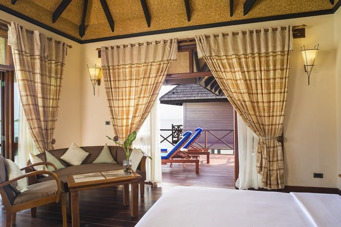
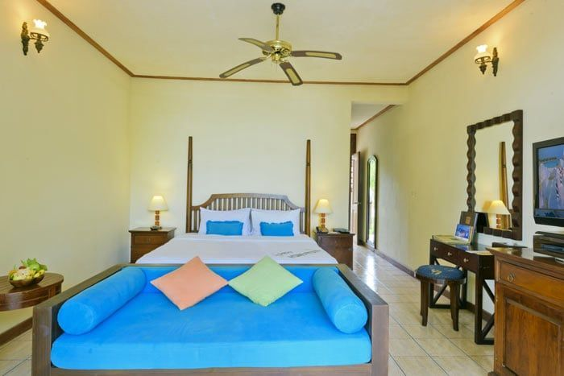

|  |
𝑽𝑰𝑳𝑳𝑨 𝑷𝑰𝑳𝑶𝑻𝑰𝑺 𝑫𝑬𝑳𝑼𝑿𝑬💍
𝘼𝙢𝙚́𝙣𝙖𝙜𝙚́𝙚𝙨 𝙚𝙩 𝙙𝙚́𝙘𝙤𝙧𝙚́𝙚𝙨 𝙖𝙫𝙚𝙘 𝙜𝙤𝙪̂𝙩, 𝙡𝙚𝙨 𝙑𝙞𝙡𝙡𝙖𝙨 𝘿𝙚𝙡𝙪𝙭𝙚 𝙨𝙪𝙧 𝙥𝙞𝙡𝙤𝙩𝙞𝙨 𝙫𝙤𝙪𝙨 𝙤𝙛𝙛𝙧𝙞𝙧𝙤𝙣𝙩 𝙡𝙚 𝙡𝙪𝙭𝙚 𝙚𝙩 𝙡𝙚 𝙘𝙤𝙣𝙛𝙤𝙧𝙩 𝙧𝙚𝙘𝙝𝙚𝙧𝙘𝙝𝙚́𝙨. 𝙀𝙡𝙡𝙚𝙨 𝙨𝙤𝙣𝙩 𝙚́𝙦𝙪𝙞𝙥𝙚́𝙚𝙨 𝙙𝙚 𝙛𝙖𝙘𝙞𝙡𝙞𝙩𝙚́𝙚𝙨 𝙩𝙝𝙚́/𝙘𝙖𝙛𝙚́, 𝙙'𝙪𝙣 𝙜𝙧𝙖𝙣𝙙 𝙡𝙞𝙩 𝙖̀ 𝙗𝙖𝙡𝙙𝙖𝙦𝙪𝙞𝙣, 𝙙'𝙪𝙣 𝙩𝙚́𝙡𝙚́𝙥𝙝𝙤𝙣𝙚, 𝙙'𝙪𝙣 𝙗𝙪𝙧𝙚𝙖𝙪, 𝙙'𝙪𝙣 𝙏𝙑 𝙥𝙖𝙧 𝙨𝙖𝙩𝙚𝙡𝙡𝙞𝙩𝙚 𝙚𝙩 𝙙'𝙪𝙣 𝙡𝙚𝙘𝙩𝙚𝙪𝙧 𝘾𝘿. 𝙇𝙖 𝙨𝙥𝙖𝙘𝙞𝙚𝙪𝙨𝙚 𝙨𝙖𝙡𝙡𝙚 𝙙𝙚 𝙗𝙖𝙞𝙣 𝙤𝙛𝙛𝙧𝙚 𝙚́𝙜𝙖𝙡𝙚𝙢𝙚𝙣𝙩 𝙩𝙤𝙪𝙨 𝙡𝙚𝙨 𝙚́𝙦𝙪𝙞𝙥𝙚𝙢𝙚𝙣𝙩𝙨 𝙨𝙤𝙪𝙝𝙖𝙞𝙩𝙚́𝙨 𝙖𝙞𝙣𝙨𝙞 𝙦𝙪'𝙪𝙣𝙚 𝙡𝙖𝙧𝙜𝙚 𝙗𝙖𝙞𝙜𝙣𝙤𝙞𝙧𝙚. 𝙇𝙚𝙨 𝙫𝙞𝙡𝙡𝙖𝙨 𝙙𝙞𝙨𝙥𝙤𝙨𝙚𝙣𝙩 𝙙'𝙪𝙣𝙚 𝙩𝙚𝙧𝙧𝙖𝙨𝙨𝙚 𝙤𝙛𝙛𝙧𝙖𝙣𝙩 𝙪𝙣𝙚 𝙫𝙪𝙚 𝙨𝙪𝙧 𝙡𝙚 𝙡𝙖𝙜𝙤𝙣 𝙚𝙩 𝙚́𝙦𝙪𝙞𝙥𝙚́𝙚 𝙙𝙚 𝙩𝙧𝙖𝙣𝙨𝙖𝙩𝙨 𝙥𝙤𝙪𝙧 𝙫𝙤𝙩𝙧𝙚 𝙧𝙚𝙡𝙖𝙭𝙖𝙩𝙞𝙤𝙣 𝙚𝙣 𝙩𝙤𝙪𝙩𝙚 𝙞𝙣𝙩𝙞𝙢𝙞𝙩𝙚́. 𝘼𝙘𝙘𝙚̀𝙨 𝙙𝙞𝙧𝙚𝙘𝙩 𝙖𝙪 𝙡𝙖𝙜𝙤𝙣 𝙥𝙖𝙧 𝙦𝙪𝙚𝙡𝙦𝙪𝙚𝙨 𝙢𝙖𝙧𝙘𝙝𝙚𝙨. 𝙇𝙚𝙨 𝙑𝙞𝙡𝙡𝙖𝙨 𝘿𝙚𝙡𝙪𝙭𝙚 𝙨𝙪𝙧 𝙥𝙞𝙡𝙤𝙩𝙞𝙨 𝙥𝙚𝙪𝙫𝙚𝙣𝙩 𝙖𝙘𝙘𝙪𝙚𝙞𝙡𝙡𝙞𝙧 𝙟𝙪𝙨𝙦𝙪'𝙖̀ 2 𝙖𝙙𝙪𝙡𝙩𝙚𝙨 𝙚𝙩 1 𝙚𝙣𝙛𝙖𝙣𝙩 (𝙖̂𝙜𝙚́ 𝙙𝙚 𝙥𝙡𝙪𝙨 𝙙𝙚 7 𝙖𝙣𝙨) 𝙤𝙪 3 𝙖𝙙𝙪𝙡𝙩𝙚𝙨. 𝑺𝒖𝒑𝒆𝒓𝒇𝒊𝒄𝒊𝒆 : 63 𝒎² 𝑪𝒂𝒑𝒂𝒄𝒊𝒕𝒆́ 𝒎𝒂𝒙. : 3 𝒑𝒆𝒓𝒔𝒐𝒏𝒏𝒆𝒔 (3 𝒂𝒅𝒖𝒍𝒕𝒆𝒔, 2 𝒂𝒅𝒖𝒍𝒕𝒆𝒔 + 1 𝒆𝒏𝒇𝒂𝒏𝒕) |
|  |
Chambre Deluxe
𝙇𝙚𝙨 𝙘𝙝𝙖𝙢𝙗𝙧𝙚𝙨 𝘿𝙚𝙡𝙪𝙭𝙚 𝙨𝙤𝙣𝙩 𝙨𝙞𝙩𝙪𝙚́𝙚𝙨 𝙙𝙖𝙣𝙨 𝙙𝙚 𝙥𝙚𝙩𝙞𝙩𝙨 𝙥𝙖𝙫𝙞𝙡𝙡𝙤𝙣𝙨 𝙙𝙚 4 𝙘𝙝𝙖𝙢𝙗𝙧𝙚𝙨, 𝙖̀ 𝙦𝙪𝙚𝙡𝙦𝙪𝙚𝙨 𝙥𝙖𝙨 𝙙𝙚 𝙡𝙖 𝙥𝙡𝙖𝙜𝙚. 𝙀𝙡𝙡𝙚𝙨 𝙙𝙞𝙨𝙥𝙤𝙨𝙚𝙣𝙩 𝙙'𝙪𝙣𝙚 𝙩𝙚𝙧𝙧𝙖𝙨𝙨𝙚 𝙤𝙪 𝙙'𝙪𝙣 𝙗𝙖𝙡𝙘𝙤𝙣 𝙤𝙛𝙛𝙧𝙖𝙣𝙩 𝙪𝙣𝙚 𝙫𝙪𝙚 𝙨𝙪𝙧 𝙡𝙚 𝙡𝙖𝙜𝙤𝙣. 𝙏𝙤𝙪𝙩𝙚𝙨 𝙡𝙚𝙨 𝙘𝙝𝙖𝙢𝙗𝙧𝙚𝙨 𝙨𝙤𝙣𝙩 𝙖𝙢𝙚́𝙣𝙖𝙜𝙚́𝙚𝙨 𝙚𝙩 𝙢𝙚𝙪𝙗𝙡𝙚́𝙚𝙨 𝙙𝙚 𝙛𝙖𝙘̧𝙤𝙣 𝙘𝙤𝙣𝙛𝙤𝙧𝙩𝙖𝙗𝙡𝙚. 𝙀𝙡𝙡𝙚𝙨 𝙨𝙤𝙣𝙩 𝙚́𝙦𝙪𝙞𝙥𝙚́𝙚𝙨 𝙙'𝙪𝙣 𝙫𝙚𝙣𝙩𝙞𝙡𝙖𝙩𝙚𝙪𝙧, 𝙙𝙚 𝙡𝙖 𝙘𝙡𝙞𝙢𝙖𝙩𝙞𝙨𝙖𝙩𝙞𝙤𝙣, 𝙙'𝙪𝙣 𝙢𝙞𝙣𝙞-𝙗𝙖𝙧, 𝙙'𝙪𝙣 𝙩𝙚́𝙡𝙚́𝙥𝙝𝙤𝙣𝙚, 𝙙'𝙪𝙣𝙚 𝙏𝙑 𝙥𝙖𝙧 𝙨𝙖𝙩𝙚𝙡𝙡𝙞𝙩𝙚, 𝙙'𝙪𝙣 𝙡𝙞𝙩 𝙖̀ 𝙗𝙖𝙡𝙙𝙖𝙦𝙪𝙞𝙣, 𝙙'𝙪𝙣 𝙘𝙤𝙛𝙛𝙧𝙚-𝙛𝙤𝙧𝙩 𝙚𝙩 𝙙'𝙪𝙣 𝙗𝙪𝙧𝙚𝙖𝙪. 𝙇𝙚𝙨 𝙨𝙖𝙡𝙡𝙚𝙨 𝙙𝙚 𝙗𝙖𝙞𝙣 𝙨𝙤𝙣𝙩 𝙨𝙥𝙖𝙘𝙞𝙚𝙪𝙨𝙚𝙨. 𝙇𝙚𝙨 𝙘𝙝𝙖𝙢𝙗𝙧𝙚𝙨 𝘿𝙚𝙡𝙪𝙭𝙚 𝙥𝙚𝙪𝙫𝙚𝙣𝙩 𝙖𝙘𝙘𝙪𝙚𝙞𝙡𝙡𝙞𝙧 𝙟𝙪𝙨𝙦𝙪'𝙖̀ 3 𝙖𝙙𝙪𝙡𝙩𝙚𝙨 𝙤𝙪 2 𝙖𝙙𝙪𝙡𝙩𝙚𝙨 𝙚𝙩 2 𝙚𝙣𝙛𝙖𝙣𝙩𝙨. 𝙎𝙪𝙥𝙚𝙧𝙛𝙞𝙘𝙞𝙚 : 50 𝙢² |